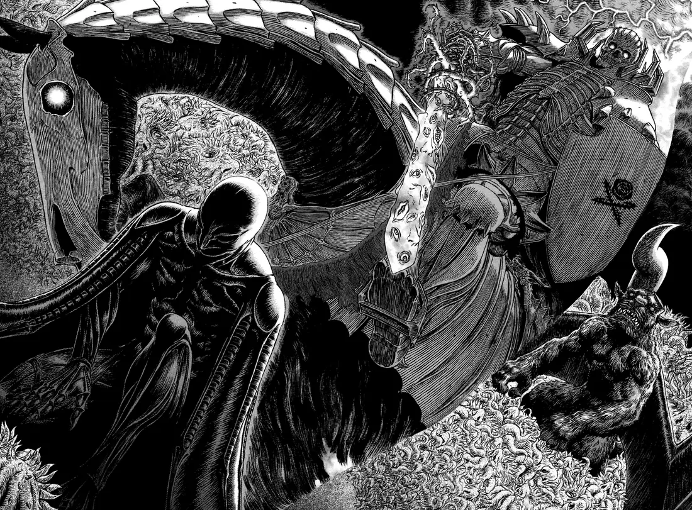

Tramado cruzado
Líneas paralelas en dos direcciones para dar volumen sin grises: sombra, piel, piedra y tela se distinguen por la densidad del trazo.
El trazo · 28 paneles
Una selección de viñetas y dobles páginas elegidas por cómo están dibujadas: el tramado cruzado, el negro que se vuelve materia y las composiciones que sostienen una escena sin una sola palabra.

La colección
Filtra por arco, abre cualquier lámina para verla a tamaño completo y muévete entre paneles con las flechas del teclado. Cada ficha indica el episodio y enlaza al archivo original.
35 paneles
No hay paneles de ese arco.
Cómo está dibujado
No hace falta ser dibujante para ver por qué estos paneles funcionan. Estas son las tres decisiones que más aparecen en la selección.
Líneas paralelas en dos direcciones para dar volumen sin grises: sombra, piel, piedra y tela se distinguen por la densidad del trazo.
Capas, pelajes y cielos se resuelven en negro plano. El contraste con el blanco del papel hace que la figura salte antes que el fondo.
Muchas escenas se dibujan pensando en la doble página: el impacto ocupa el pliegue y la mirada recorre la composición de izquierda a derecha.
Aviso. Los paneles pertenecen a Kentaro Miura y a Hakusensha. Se muestran con fines educativos y de comentario, citando el episodio y el archivo de origen en Berserk Wiki. Este proyecto no reclama licencia alguna sobre las imágenes.